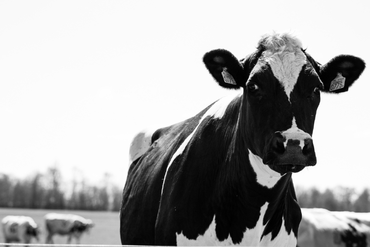
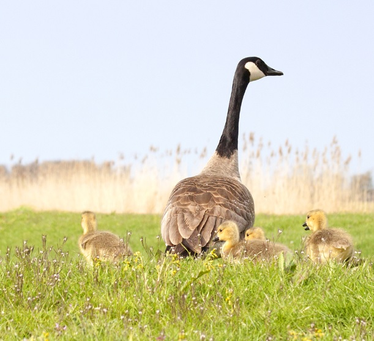

Kleur of Zwart-Wit?
Wat is mooier in welke situatie? Op deze pagina wat meer in info over de verschillen.
Toen fotografie nog een nieuw fenomeen was, was er alleen zwart-wit. Tegenwoordig kunnen we veel scherper en kleurijkere foto's maken. Maar soms is een zwart-wit foto nog steeds mooier, door bijvoorbeeld het contrast te versterken.
Zwart-wit denken
Besluit van tevoren of je de foto gaat omzetten naar zwart-wit. Niet iedere foto is geschikt voor omzetting naar zwart-wit namelijk. Een foto die goed om te zetten is bevat het liefst harde contrasten en een mooie structuur. Dit laatste komt namelijk veel duidelijker naar voren in een zwart-wit foto dan in een kleurenfoto. Let ook goed op de compositie, door het wegvallen van de kleur zijn onderwerpen minder makkelijk van elkaar te onderscheiden. Zorg er dus voor dat de onderwerpen van elkaar gescheiden zijn. Ook een lage ISO is aan te raden. Ruis in je zwart-wit foto is namelijk niet hetzelfde als de mooie korrel in analoge zwart-wit film. En als je toch ruis in je foto wilt, kun je dat beter achteraf toevoegen in een bewerkingsprogramma.
Hier nog een voorbeeld van de verschillen tussen kleur en zwart-wit in een foto...
Dezelfde foto, alleen dan zwart-wit en kleur. Je ziet dat de focus van de foto totaal veranderd wanneer de kleuren weg zijn. Bij de kleuren foto zijn de jonge ganzen goed zichtbaar met hun gekleurde dons. Bij de zwart-wit variant valt de moeder gans veel meer op, en de jonge ganzen zijn gecamofleerd door het gras.